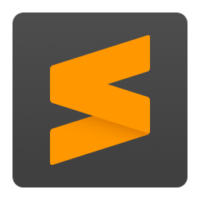
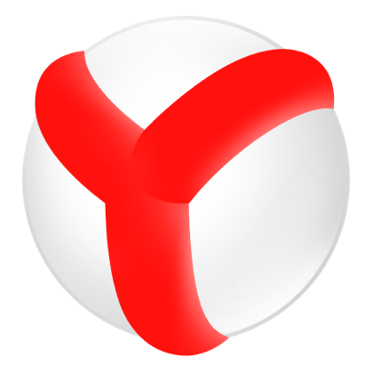
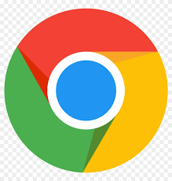
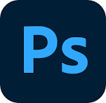

Основной инструментарий, учимся работать руками
Для эффективной работы не обойтись без необходимых и привычных инструментов,
в том числе и при написании кода HTML. Поэтому для начальной разработки веб-страниц или даже
небольшого сайта — так называется набор страниц, связанных между собой ссылками и единым
оформлением, нам понадобятся следующие программы:
1) Текстовый редактор
2) Браузер для проверкки результатов
3) Графический редактор
4) Справочник по тегам HTML
Текстовый редактор
Существует множество текстовых редакторов, обычно используют эти:
Notepad++

Это бесплатный текстовый редактор, который подсвечивает как синтаксис языков программирования, так и HTML-разметки. С его помощью на курсах по HTML студенты учатся сравнивать файлы, сворачивать блоки кода и блочно выделять текст.
Стоит отметить, что он гораздо удобнее своего предшественника — стандартного блокнота. Большее количество настроек, возможность открывать сразу несколько файлов в одном окне и быстро переключаться между ними, автосохранение, обозначение строк кода и прочие приятные мелочи позволяют сделать работу более комфортной. Но Notepad++ все равно не является интегрированной средой разработки (ЕСР), поэтому он не умеет добавлять недостающие знаки или подсвечивать ошибки.
Sublime Text

Редактор, который похож на Notepad++, но при этом обладает дополнительными функциями и довольно обширными возможностями настройки. Среди них можно выделить: способность поддерживать около двадцати семи языков программирования, подсветку синтаксиса, автосохранение изменений в файлах. Эта программа поможет студентам, которые решили изучить HTML верстку с нуля, запускать код без перехода в командную строку. Разработчики позволяют пользоваться продуктом в свободном доступе, но программа сообщает о необходимости покупки лицензии.
Браузер для проверки результатов
Yandex
Существует много браузеров,я обычно используют Yandex
Yandex очень популярный браузер, его исользует около 17 миллионов пользователей.

Яндекс.Браузер — браузер, созданный компанией «Яндекс» на основе движка Blink, используемого в открытом браузере Chromium. Впервые был представлен 1 октября 2012 года на технологической конференции Yet another Conference. Обозреватель от Яндекса занимает второе место на рынке настольных компьютеров в рунете.
Google Chrome
Так же есть браузер Google chrom
Google chrome очень популярный браузер среди пользователей, но использует много ОЗУ, поэтому он мне не нравится.

Google Chrome — браузер, разрабатываемый компанией Google на основе свободного браузера Chromium и движка Blink. Первая публичная бета-версия для Windows вышла 2 сентября 2008 года, а первая стабильная — 11 декабря 2008 года.
Графический редактор
Adobe Photoshop CS5

Adobe Photoshop — многофункциональный графический редактор, разрабатываемый и распространяемый компанией Adobe Systems. В основном работает с растровыми изображениями, однако имеет некоторые векторные инструменты.
Справочник по тегам Html

 Вернуться назад
Вернуться назад
Сайт создал
Данил Беспалов